连猫都能看懂的虚幻4版本管理教程
关键词： 虚幻引擎、游戏开发、版本管理、Git加速
授权协议： CC BY-NC-SA 3.0，转载请标注来源
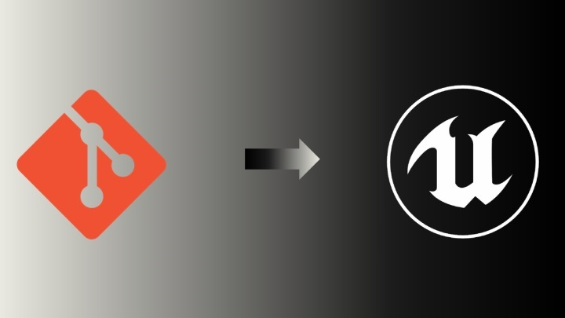
前言
今年年中被外派到合作伙伴公司驻场的时候，着实被没有团队协作经验的那边坑的苦不堪言。所幸一开始有在项目中用版本管理给整个项目兜底，才没牺牲自己的个人休息时间给别人擦屁股。年前总结时回想此事，遂决定写篇备忘，供人参考。
在本文中，笔者将使用Git作为版本管理工具。Git因功能强大，部署方便，且适合各种规模的团队协作，是居家在外，拒绝加班的不二良器。
为什么不用SVN呢？因为集中版本管理状态下服务端的稳定性将严重影响整个项目的安全。大部分中小企业的IT支持部门不一定能构建达到足够生产环境应用的源码服务器（当然有例外）。既然如此，鸡蛋还是不要放到一个篮子里好。
长话短说，我们直接步入教程吧。
0、准备先决条件
要想在虚幻引擎项目中使用Git，我们需要准备以下几个东西：
- UE4
- Git
- Git-LFS（Git Large File Storage）【管理项目的资源文件，防止版本库过度膨胀】
- Visual Studio Code【非必须；作为有GUI的版本管理工具用】
下载地址：
（如果下载速度太慢可以找个上网工具加速一下）
安装顺序： VS-Code → Git → Git-LFS
Git-LFS在OS中安装后需要在Git Bash下以命令 git lfs install 完成装载。当安装完成后可输入 git lfs -v 来确认装载是否正确，正确安装后会返回版本号。

在完成了以上四个软件的安装后，打开VS-Code安装可视化管理插件Git Graph（方便新手可视化管理）。
Git Graph - Visual Studio Code Marketplace
到这里我们的准备工作就告一段落了。
1、创建新项目并添加到版本管理
首先，打开虚幻引擎，创建一个空白项目（最简单的项目）。

在工程启动后，我们能看到主界面上的版本管理图标上显示了禁止的标志，它没有被启用。
现在我们点击右侧箭头，并连接到源码管理。
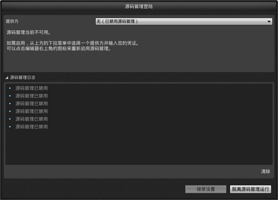
选择源码管理供应方为“Git（beta版）”，并填写项目所需内容。
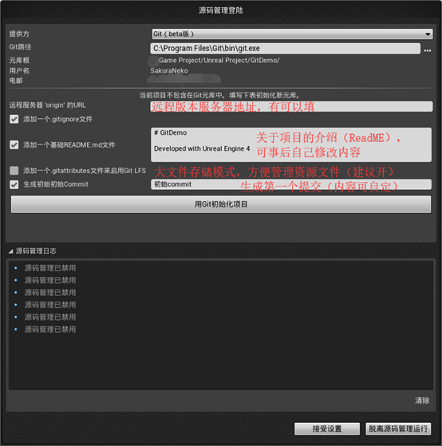
注意：在启用Git-Lfs后引擎的Git插件会自动将整个Content（内容）目录划归为Git-LFS的管理范围。
完成后，记得点击接受设置，确保源码管理系统上线。源码管理上的小图标会变成“绿色圆环内的双箭头”，表明源码管理系统已经完成上线。
任何项目都可以在任意阶段加入源码控制，在保护资源安全的同时方便团队协作。
2、生产：提交、更改、删除
在生产环境中，我们会使用源码管理来控制工作。
笔者将用资源的导入和提交来演示这个过程。
首先，是一个简单的资源新增工作。
现在笔者导入了一个角色。我们来创建一个提交，保存自己的完成的工作；
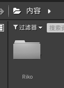
在资源查看器里右键单击之前导入内容的的目录，选择 标记为添加，等待对话框更新完成后，我们就完成了内容的添加（git add）；

此时添加的内容被存放在 “暂存区域”，并未被合并进源码树；

暂存区：英文叫stage, 或index。一般存放在 “.git目录下” 下的index文件（.git/index）中，所以我们把暂存区有时也叫作索引（index）。当对工作区修改（或新增）的文件执行 “git add” 命令时，暂存区的目录树被更新，同时工作区修改（或新增）的文件内容被写入到对象库中的一个新的对象中，而该对象的ID被记录在暂存区的文件索引中。
（我们不能再工作区直接看到暂存的内容）
再点击 “迁入”，完成文件的提交（git commit）。
引擎会打开提交文件操作窗口，要求你填写“提交变更描述”；
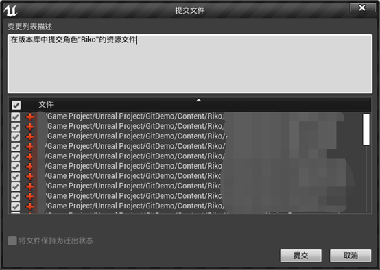
注意：描述最好简明扼要，交代提交的内容、操作中主要的信息即可。
完成后，引擎会弹出通知；

其次是一个涉及到资源删除的资源移动行为：
创建“Rules”目录，并将“Riko”目录整体移动到“Rules”目录内。

然后打开源面板（位于内容管理器新增按钮下方），选择整个内容目录并在右键菜单进行迁入操作；
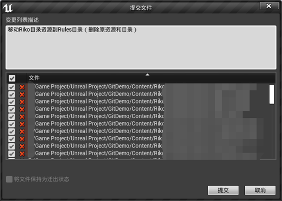
注意：在管理器面板中，“×”标志代表删除；“＋”标志代表新增；“√”标志代表修改；
完成后，引擎会通知步骤完成；
接下来，再模拟一个资源修改的状态。
先创建“Levels”目录，在目录下添加测试用地图“TestMap”，并完成资源迁入；

往地图“TestMap”内添加了代表内容修改的蓝图静态网格体Riko；
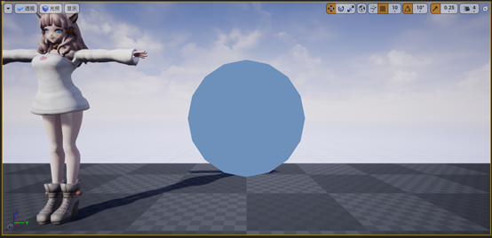
这里不提供Riko角色资源，需要请前往虚幻商城自行购买（笑
保存后，内容管理器图示发生变更；
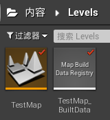
对“TestMap”进行资源迁入，并完成提交；
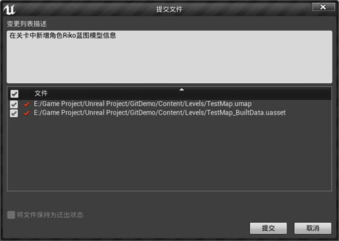
3、历史记录和内容对比
现在假设一种情况，我们在前一天开发的时候对蓝图进行了新增和改动，
要如何查看这些发生的变更呢？
好消息是虚幻引擎已经内置了这一功能。
创建一个新的蓝图文件，保存并提交。然后在该蓝图类上添加一个示例功能，保存并提交；
右键发生更改的文件，在源码管理下打开历史记录；
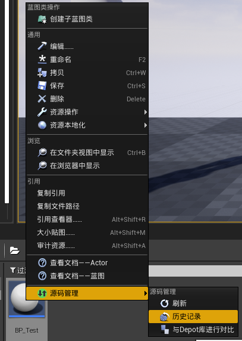
选中一条记录与之前提交的内容进行对比；

可以看到两次提交之间发生的更改；

注意：对比关卡时，引擎会显示资源不被支持（4.24）
4、资源同步
以GitHub为例，如何推送资源到远程储存库呢？
基本步骤为：
- 在GitHub上创建空储存库；
- 在本地填写远程储存库信息；
- 身份验证；
- 同步更改（提取+推送）；
这些通过VS-Code即可轻松的完成。
详细教程见下面的文章：
5、注意事项和后续学习
下面是一些在实际操作中会遇到的“坑”，请大家注意：
- 在Windows设备中，Git默认对目录、文件的名称大小写不敏感。在实际开发时可以项目目录 .git 下的 config 文件进行修改， 将 ignorecase 参数改为 false 来解决问题；
- 远端服务器有可能不支持Git-LFS，这可能需要公司的IT部门配合（可以内网自行安装GitLab服务器）。当然公有代码托管服务 GitLab、Github、Gitblit 三家是支持这一功能的（国内码云基于GitLab）；
- 工作时做到“随时提交，下班同步”。但切记不要将未经验证的代码和内容提交到版本库内，这些有潜在问题的数据可能给自己和同事造成麻烦；
- 最后切记万事小心谨慎：即使有源码和版本管理，也切记做好多份物理备份，防范于未然；
后续学习：
Git LFS 入门指南 - OSCHINA
bluerose：使用Gitlfs对uasset、umap等二进制文件进行版本管理
后传：从Github上克隆（Clone）虚幻引擎太慢怎么办？
大家都知道可以用某些科学工具来加速浏览……
但是Git本身是不会默认走代理线路的。
怎么办呢？
打开终端（CMD/PowerShell/Git Bash）输入以下内容：
ALL_PROXY=[你的链接协议]://[代理地址]:[端口] git clone [需要Clone的Git地址]将方括号内的内容连同方括号一起替换成要填写的内容即可。
这个加速方法仅当次有效，不需要修改整体配置文件，避免麻烦。

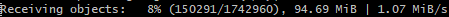
补充阅读：

Sdorica - いずみ（By：TEE） | Pixiv：69604849
本文以CC BY-NC-SA 3.0协议发布，转载请标注来源。
本博客所有文章除特别声明外，均采用 CC BY-NC-SA 3.0 协议 ，转载请注明出处！